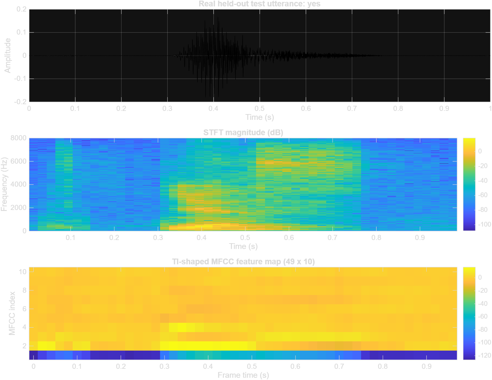
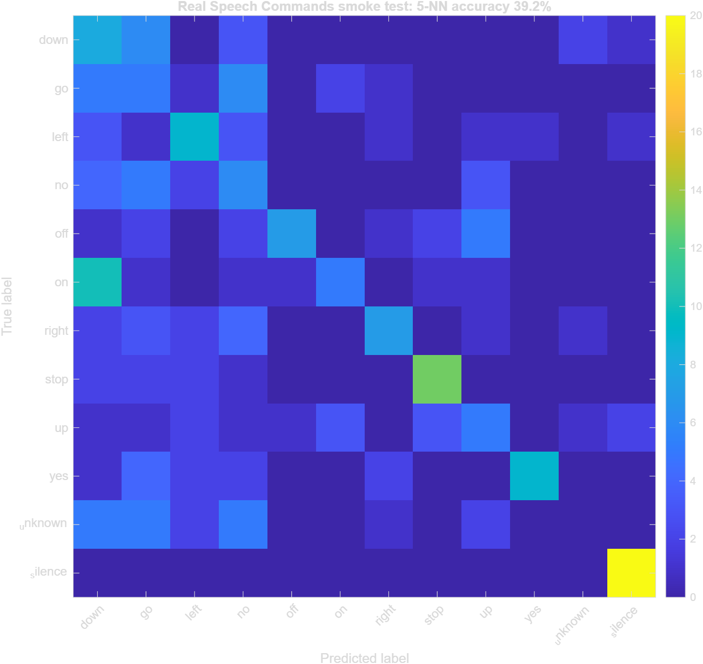

Research question
How accurately can a compact, resource-aware model distinguish ten voice commands, unknown speech, and silence when evaluated with speaker-disjoint data?
Method
Speech Commands v0.02 is partitioned using its official validation and testing lists. Each waveform is converted into 30 ms frames at a 20 ms step. Forty Mel-band energies are compressed into ten MFCCs, producing 49 time frames per utterance. A manual 5-nearest-neighbour model establishes the first auditable baseline; a depthwise-separable CNN is the planned next model.
Evidence boundary: the current result uses 720 training and 240 held-out test samples. It is a small MATLAB baseline, not a DSCNN, quantised model, NPU compilation, or hardware energy result.
Preliminary analysis


The baseline reached 39.17% accuracy and macro recall, above the 8.33% chance level, with zero audited speaker overlap. Silence recall was 100%, while unknown-word recall was 0%. This failure identifies the main next problem: learn a stronger temporal representation and an explicit rejection boundary for out-of-vocabulary speech.
Evaluation and deliverables
Exact manifests and speaker-overlap audit.
Accuracy, macro recall, per-class precision/recall.
Runtime, parameters, memory, and later MCU feasibility.
Timeline
| Weeks | Milestone |
|---|---|
| 1-2 | Scope, dataset audit, literature review |
| 3-5 | MFCC front end and reproducible baseline |
| 6-9 | DSCNN implementation and validation |
| 10-11 | Testing, robustness, and resource analysis |
| 12-13 | Final report, GitHub documentation, demonstration |